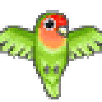
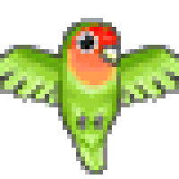

Los agapornis, también conocidos como inseparables, son un grupo de aves psitácidas pertenecientes al género Agapornis. Se reconocen 9 especies dentro de este género, cada una con características únicas y distribución geográfica específica, estas han sido reconocidas y descritas en la literatura científica y ornitológica, con información respaldada por estudios de campo, investigaciones genéticas y observaciones de expertos en aves. A continuación, se presenta una lista completa y verificada de los tipos de agapornis:
 

El Agapornis swindernianus, el gran desconocido de la familia agapornis, es una especie de ave perteneciente a la familia Psittaculidae, endémica de África Central. Se encuentra principalmente en la región de la cuenca del Congo, incluyendo áreas de la República Democrática del Congo, la República del Congo y Gabón. Esta especie no se encuentra en cautividad debido a que su alimentacion esta basada en semillas e higos que solo se encuentran en su habitad natural, por lo que se sabe muy poco de esta especie. Una caracteristica unica de esta especie es que a diferencia de otros agapornis, este tiene el pico negro y el iris amarillo brillante.
El Agapornis fischer, conocido comúnmente como inseparable de Fischer, es una especie de ave psitácida que se caracteriza por su plumaje vibrante y su comportamiento social. Aquí te presento información sobre esta especie, respaldada por testimonios de cuidadores de aves, veterinarios y referencias a investigaciones:
El Agapornis cana, comúnmente conocido como inseparable de Nyasa, es una especie de ave perteneciente a la familia Psittaculidae, nativa de África, específicamente de la región del sur del continente, incluyendo áreas de Mozambique, Zambia, y Tanzania. Es de las pocas especies en donde se puede diferenciar al macho de la hembra visualmente ya que el macho tiene medio cuerpo gris mientras la hembra es completamente verde.
El Agapornis nigrigenis, conocido comúnmente como inseparable de Abisinia, es una especie de ave psitaciforme perteneciente a la familia Psittaculidae. Esta especie es nativa de las regiones montañosas del Cuerno de África, incluyendo Etiopía y Eritrea y por lo general se les confunde con agapornis Personata o con agapornis hibridos, pero una caracteristica unica de esta especies que que se puede ver el iris de sus ojos.
El Agapornis personatus, también conocido como inseparable máscara negra, es una especie de ave psitácida que se distingue por su característica máscara facial oscura y esta destaca sus anillos oculares.
El Agapornis lilianae, también conocido como inseparable de Lilian o agapornis enmascarado, es una especie de ave psitaciforme perteneciente a la familia Psittaculidae. Originario de África, este agapornis se encuentra principalmente en las regiones de África Central, incluyendo países como Zambia, Tanzania, y la República Democrática del Congo.
El Agapornis taranta, conocido comúnmente como inseparable de Nyasa, es una especie de ave perteneciente a la familia Psittaculidae, originaria de ciertas regiones del sur de África, específicamente en áreas cercanas al lago Malawi y partes de Tanzania. Es de las pocas especies en donde se puede diferenciar al macho de la hembra visualmente y ademas es el genero mas grande de todas las especies
El Agapornis roseicollis, comúnmente conocido como inseparable de cara rosada, es una especie de ave psitácida originaria del suroeste de África. Destaca por su hermoso plumaje y su comportamiento social, lo que lo convierte en una mascota popular en hogares de todo el mundo. Este pequeño loro presenta un plumaje principalmente verde, con la cabeza y el cuello de un color rosa intenso, de donde deriva su nombre común, y carecen de anillo ocular. Sus mejillas son blancas y presenta un parche azul en las plumas de las alas. Los expertos en aves y veterinarios especializados destacan su naturaleza sociable y juguetona, lo que lo convierte en una mascota ideal para aquellos que buscan compañía en un ave doméstica.
El Agapornis pullarius, comúnmente conocido como inseparable de Senegal, es una especie de ave perteneciente a la familia Psittaculidae, nativa de ciertas regiones del oeste de África, particularmente en países como Senegal, Gambia, Guinea-Bissau y partes de Mali, es el genero mas pequeño de todas las especies y una caracteristica unicaque tiene es que las plumas de su cola poseen 3 colores.